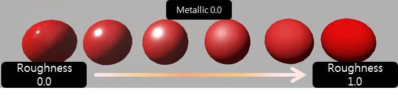
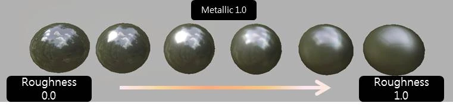
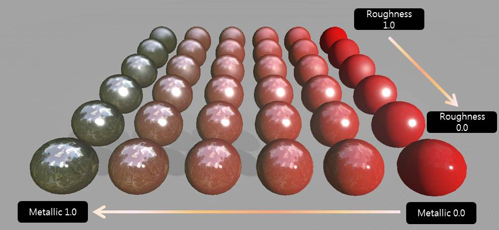

Physically Based Rendering
UE3’s base rendering model is Phong shading. I got to know that the latest version of UE3 was applied to deferred rendering.
For this reason, I thought that it is suitable environment to change the base rendering model from Phong shading to Physically-based shading in my project.
To apply this techniques, I have referenced many papers about Physically-based shading such as Physically-based shading at Disney,Physically-based rendering in UE4 and John hable’s Physically-based shader.
I optimized and modified the algorithm to be fitted in my project. And also, I added new functions such as output tap for Roughness and Metallic in material editor, importing to the Lookup table texture (6 pg), which contain lookup value about GGX BRDF’s distribution Term, Fresnel Term, Roughness and cos θv of GGX BRDF for IBL in each channel , for optimizing shader instructions.

Recently, I have tried to change the system about lightmap based on Phong shading.
<Physically-Based-Shading>
It represents almost materials in our game, except for special materials like as skin or hair.

  


<Comparison with Rougness and Metallic>

<Fresnel>

I used a prefilterd cubemap for global illumination which was devised in UE4.


<Global Illumination Off/On>
Releated